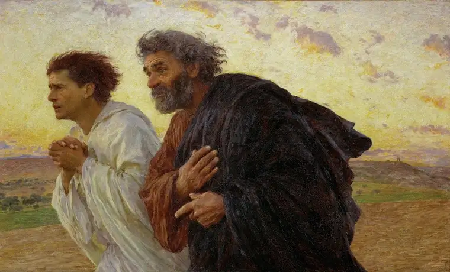

Recently, I encountered a most fitting description of faith; one that had been uttered by the late Sri Lankan pastor D.T. Niles: “Christianity is one beggar telling another beggar where he found bread.”
I like when we can simplify what we believe.
It’d happened earlier, too, in a Biblical rendering I came across online Easter morning. Though the original hangs in The Musée d’Orsay in Paris, discovering it virtually, it was as if I’d known it my whole life.

“The Disciples Peter and John Running to the Sepulchre on the Morning of the Resurrection” was created in 1898 by artist Eugene Burnand. It’s worth a Google search to see for yourself.
Note the expressions, the hands, the sheer exhilaration on the faces of these two men, who’ve just heard the wondrous news, as mentioned in Matthew 28:6: “He is not here. He is risen, just as he said.”
Until this point, the disciples had been like the rest of us — a bit dim in their understanding. But word had now reached them about Jesus’ rising, and it was a total game-changer.
Finding that God is not dead but alive should change us, too, including how we order our days and treat those we meet.
When we move through life with one eye set on eternity, our purpose ignites.
On Easter Sunday this year, Pope Francis expressed beautifully how “the Risen Shepherd goes in search of all those lost in the labyrinths of loneliness and marginalization.”
He continued, “He comes to meet them through our brothers and sisters who treat them with respect and kindness and help them to hear his voice, an unforgettable voice, a voice calling them back to friendship with God.”
A few days earlier, Bishop Robert Barron wrote in a Lenten reflection that if Jesus didn’t rise from the dead, all Christian ministers “should go home and get honest jobs, and all the Christian faithful should leave their churches immediately.”
He also quoted Saint Paul: “If Jesus is not raised from the dead, our preaching is in vain and we are the most pitiable of men.”
No resurrection, Barron concluded, means Jesus is “a fraud and a joke.”
“But if he did rise from death,” he said, “then Christianity is the fullness of God’s revelation, and Jesus must be the absolute center of our lives.”
As believers, we cannot force anyone else to see what we see. We can only rush toward our Lord in haste, and hope others will join us in this most exhilarating trek.
We are, as Pastor Niles had remarked, just beggars pointing to the bread we’ve discovered — the Bread of Life; food worth seeking, and dying for.
[For the sake of having a repository for my newspaper columns and articles, I reprint them here, with permission, a week after their run date. The preceding ran in The Forum newspaper on April 30, 2017.]